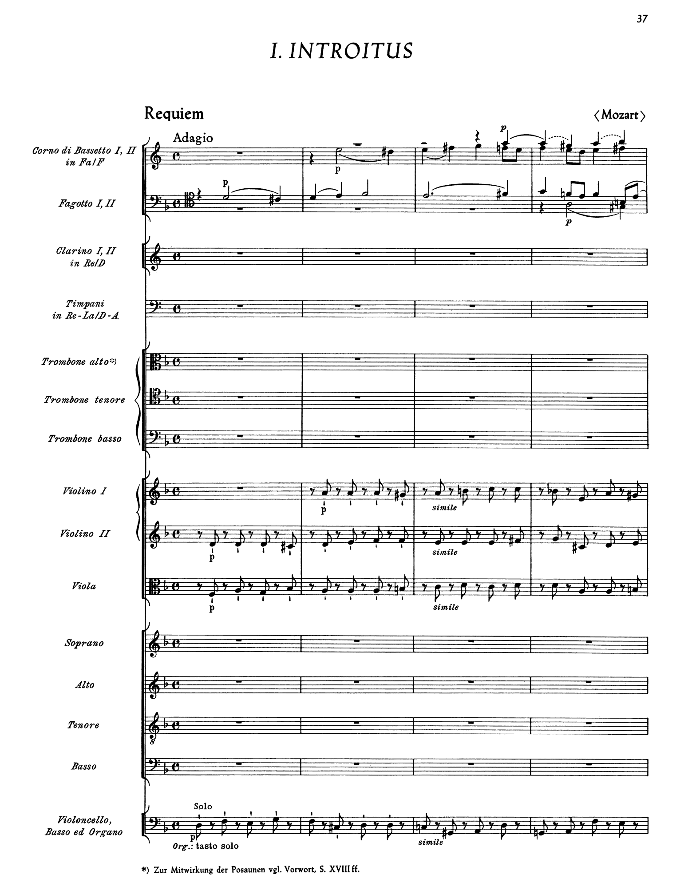
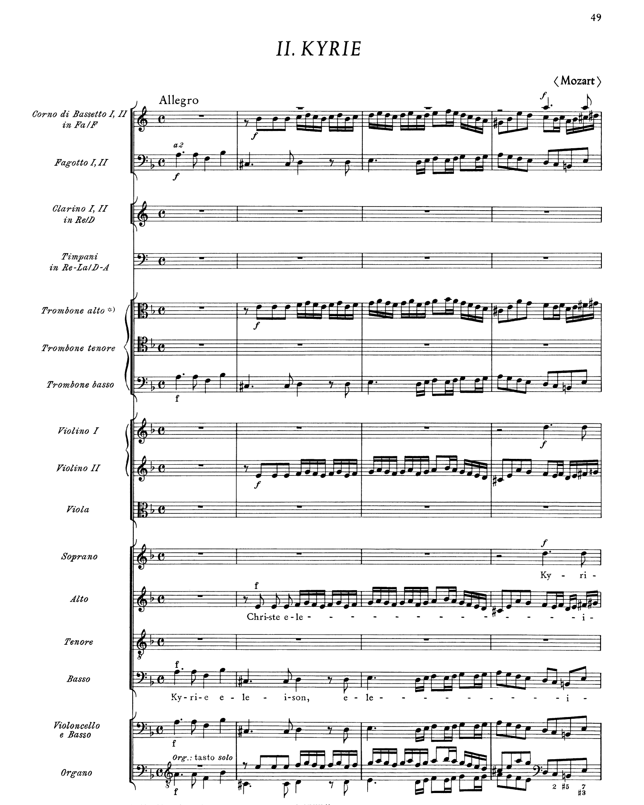
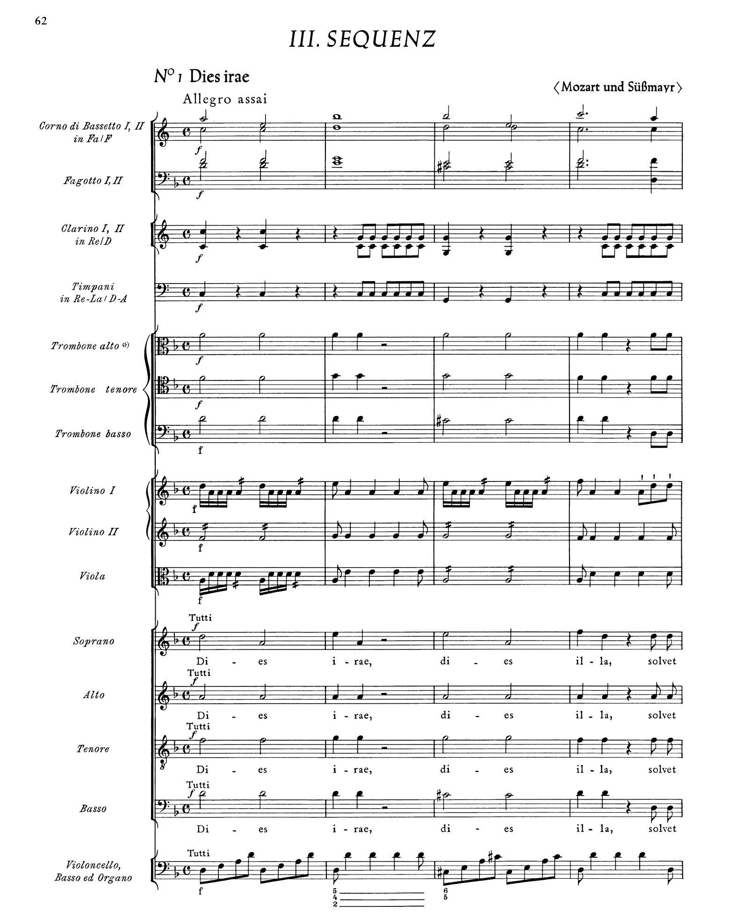
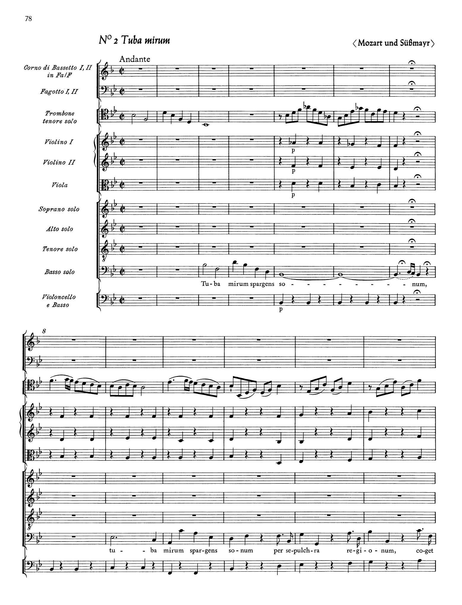
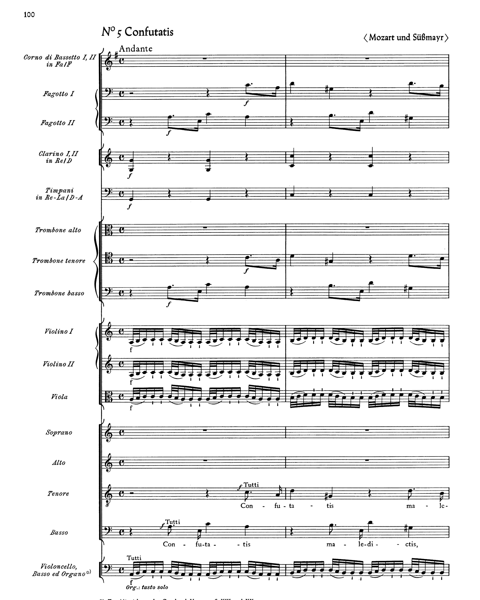
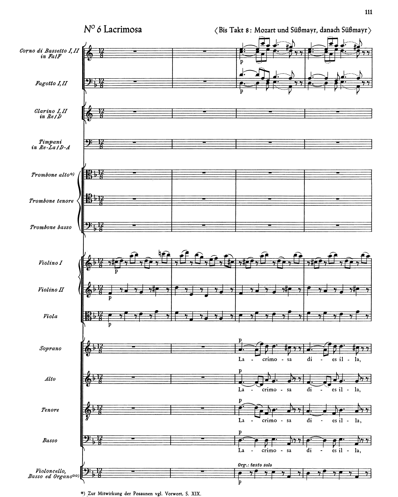
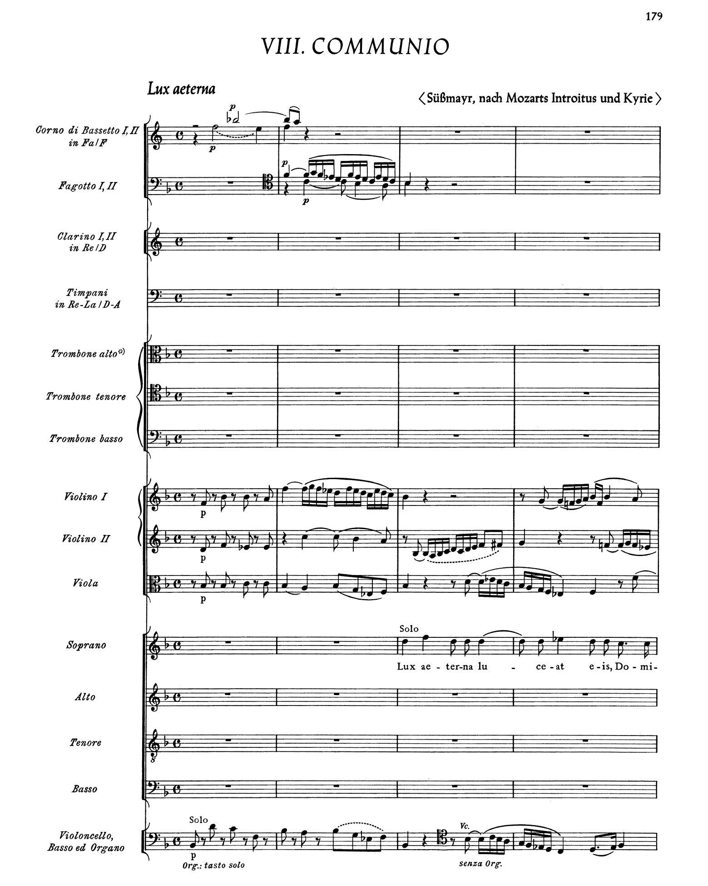

Introduction
This is Mozart's last work, and he did not live to finish it. He began it in the autumn of 1791 and died on 5 December that year. The commission came through an intermediary for a nobleman, Count Walsegg, who was mourning his young wife and, it seems, planned to pass the piece off as his own. Mozart's widow Constanze needed the work completed so the rest of the fee could be paid. Several musicians helped, and most of the finishing was done by Mozart's pupil Franz Xaver Süßmayr.
Some of the legends around the piece (a mysterious grey messenger, Mozart writing his own funeral music) grew in the retelling, partly through Constanze. What matters for listening is that you are hearing the work of more than one hand, and the score tells you whose. The next section lays that out.
The sound
Mozart left out the flutes, oboes and standard clarinets. The orchestra is strings, two bassoons, two basset horns (a dusky, low relative of the clarinet), two trumpets, timpani and organ, plus three trombones, an instrument he never used in his symphonies or concertos. The result is dark and a little austere, which suits the text.
Reading the guide
The Requiem is a sequence of short numbers grouped under the parts of the Mass, not movements in the symphonic sense. The sticky bar follows those parts. Each part has a listening map, and seven of the numbers include a page of the score. The listen buttons play Karl Böhm's 1971 recording. Apple Music Classical combines a few numbers into one track (Introitus with Kyrie, Agnus Dei with Lux aeterna), so those buttons share a link.
Who wrote what
| Part | Hand |
|---|---|
| Introitus · Kyrie | Mozart |
| Sequence: Dies irae to Confutatis | Mozart and Süßmayr |
| Lacrimosa | Mozart for the first eight bars, then Süßmayr |
| Offertory: Domine Jesu, Hostias | Mozart and Süßmayr |
| Sanctus · Benedictus · Agnus Dei | Süßmayr |
| Communion (Lux aeterna) | Süßmayr, built on Mozart's Introitus and Kyrie |
I. Introitus: Requiem aeternam
Listening map
- INTRODUCTION Seven bars with no voices. The bassoons and then the basset horns pass the main theme between them in imitation, over steady, hushed strings.
- CHORUS The choir enters with "Requiem aeternam" (eternal rest), quiet and unhurried.
- SOLO A solo soprano brings a gentler line for "Te decet hymnus" (a hymn becomes you), then the chorus returns.
- CLOSE The movement ends on an unresolved chord (a half cadence), and the Kyrie follows at once.

img/introitus.png.What to listen for
The main theme is shaped like a mourning figure from a Handel anthem, and its outline comes back in the Kyrie and later in the work. When you hear the choir enter, notice how little it does. Mozart gets the solemnity from dark color and slow pacing.
↑ Back to topII. Kyrie
Listening map
- SUBJECTS A double fugue. One theme is set to "Kyrie eleison" and a faster, running theme to "Christe eleison".
- PILE-UP The two themes are sung together and entries stack up from every voice.
- ENDING The energy builds to a firm close on the word "eleison."

img/kyrie.png.What to listen for
A fugue is an argument where the same tune is passed from voice to voice. This one has two tunes arguing at once. Follow the quick, flowing line and let the slower line sit underneath it.
↑ Back to topIII. Sequence
1 · Dies irae
The Last Judgment arrives at full speed. The chorus enters at once on all four voices, with trumpets and timpani punching in and restless strings underneath. The trombones add weight by doubling the singers.

img/dies-irae.png.2 · Tuba mirum
The "wondrous trumpet" of judgment day is a solo tenor trombone, and a bass soloist answers it. The tenor, alto and soprano soloists then enter in turn, one voice at a time, as if each person is called forward.

img/tuba-mirum.png.3 · Rex tremendae
A short, majestic chorus for the "king of awful majesty," with a heavy, dotted rhythm. Between the proud chords the voices drop to a plea for mercy.
4 · Recordare
The mood turns tender. The four soloists sing in close, flowing lines, a quiet appeal to be remembered. The basset horns give the opening a warm color.
5 · Confutatis
This is a study in contrast. The men sing the damned being cast into the flames over agitated, rushing violins. The women answer softly, asking to be called among the blessed.

img/confutatis.png.6 · Lacrimosa
This is the last music Mozart is known to have written. The violins sigh in short paired notes, and the chorus enters softly with "Lacrimosa dies illa" (that day of weeping). The score marks the handover: the heading reads "Bis Takt 8: Mozart und Süßmayr, danach Süßmayr." Mozart may have meant to follow it with an "Amen" fugue, but Süßmayr did not include one, and the Sequence ends there.

img/lacrimosa.png.IV. Offertory
Listening map
- DOMINE JESU Andante con moto. A prayer to deliver the souls of the dead from the pit, in changing moods. Later it turns into a fugue on a promise made "to Abraham and his seed."
- HOSTIAS Andante. A quieter offering of "sacrifices and prayers," sung in a gentler, steadier tone.
- RETURN The Abraham fugue comes back after the Hostias, which pulls the two numbers together.
V–VII. Sanctus, Benedictus, Agnus Dei
No manuscript pages survive for these three numbers, and the score credits them to Süßmayr alone. He may have worked from what Mozart told him or sketched, but we cannot know. They are shorter and plainer than what came before.
- SANCTUS Adagio. A grand, slow call of "holy," followed by a brisk "Osanna" fugue.
- BENEDICTUS Andante. The four soloists sing a gentle, flowing blessing, and the "Osanna" returns.
- AGNUS DEI A plea to the "Lamb of God," which leads into the closing Communion.
VIII. Communion: Lux aeterna
Listening map
- LUX AETERNA The soprano sings "may eternal light shine upon them" to the music of the opening Introitus, with new words.
- CUM SANCTIS TUIS The fast fugue returns, now using the Kyrie's music for "with Your saints forever."
- CLOSE The fugue carries the Requiem to a firm final cadence.

img/communio.png.What to listen for
Whoever decided to bring the opening back, the effect is clear. Mozart's own music is the first and the last thing you hear.
↑ Back to topRecommended recordings
| Conductor · Ensemble | Character |
|---|---|
| Karl Böhm · Vienna Philharmonic | Weighty, traditional, with a modern orchestra and large chorus. |
| John Eliot Gardiner · Monteverdi Choir | Period instruments: leaner, quicker, sharper in the Dies irae. |
| Nikolaus Harnoncourt · Concentus Musicus Wien | Period instruments with strong drama and contrast. |
| Harry Christophers · Handel and Haydn Society | Period instruments, clear and direct. |